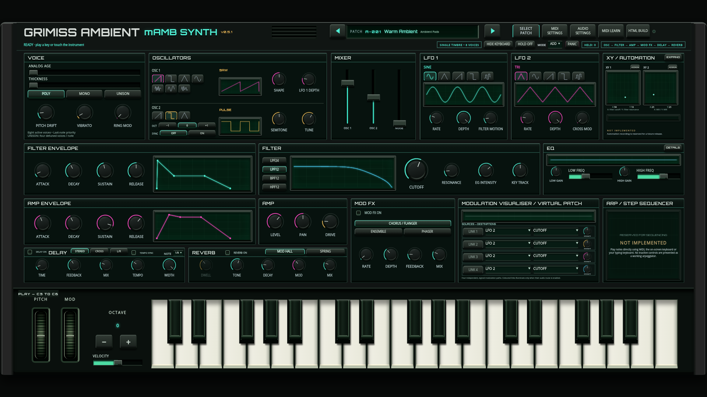
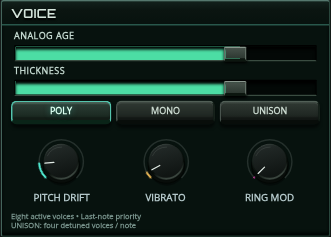
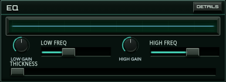
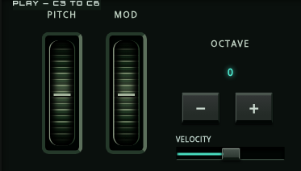
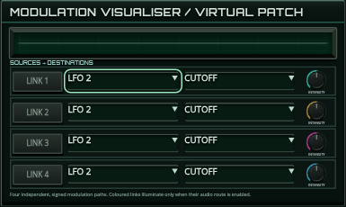
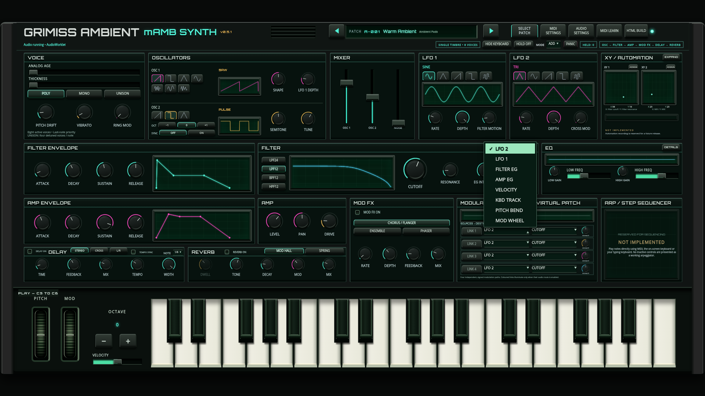

Latest update: New expressive sound and mechanical controls review. The older architecture/benchmarks below are retained as history; the latest Age/Thickness processing and wheel/keybed captures are in the new review.
Updated: Thickness now sits directly below Analog Age in VOICE. All horizontal tracks fill green as their values move; the stale refresh/legacy-line fault is fixed. The upper Age and Thickness ranges are stronger. Reverb: MOD HALL / SPRING; octave buttons:−1,0,+1; rounded matte button faces.
Latest calibration and implementation notes
Play updated synthStandalone HTMLDetailed implementation / files / limitationsRetained Prototype C
Direct Analog Age in VOICE, Velocity beside OCTAVE, and Thickness beneath Age and logarithmic frequency sliders in the existing EQ panel. Complete button selections replace redundant menus; four LINK buttons control real routes. Header collisions and knob-label spacing are corrected. Remaining dropdowns use dark readable popups with native keyboard behaviour. The37-note playable keybed now has actual notched white silhouettes and seated black faces.
Explicit mouse/touch gestures suppress native range behaviour that was overwriting values on touch release. Pitch springs back; MOD retains position. MIDI updates graphics without echo. On-screen gestures also affect held MIDI notes through a separate global contribution, preserving source-owned controller values and restoring them on reset. Effective wheel depth uses a maximum, so local/MIDI depth does not double. Explicit pitch routes take priority over fallback vibrato.
Existing OSC2 resources provide a quiet compensated companion and bounded static tuning; a712-byte shared fixed all-pass phase network adds modest stereo width. No extra voices/timbre, chorus LFO, nonlinear filter or oversampling. Thickness0 retains the preceding sound at full velocity; Age and UNISON are not duplicated. The EQ curve remains a shelf-EQ response.
These controlled8-second renders use identical notes, patch and seed, Analog Age25%, effects bypassed. Please judge the fullness by listening; no human listening result is claimed.
Identical patch/notes with Thickness0. These rendered examples are for your audition; no human listening conclusion is claimed.
Linux/Node offline throughput,48kHz/128-frame blocks, warmed/interleaved, four measured runs. Each run renders two seconds. Ratios compare each mode against its matching v0.5 baseline. This is not Windows/tablet deadline or dropout verification.
| Scenario | Median render ms | Change versus v0.5 |
|---|---|---|
| v0.5 baseline | 259.65 | +0.0% |
| v0.5.1 neutral | 252.78 | -2.6% |
| v0.5.1 thickness100 | 254.49 | -2.0% |
| v0.5 baseline UNISON | 145.28 | +0.0% |
| v0.5.1 thickness100 UNISON | 139.61 | -3.9% |
Measured level changes in test patches: POLY-1.03dB, MONO-0.32dB, UNISON+0.15dB. No extra voices. Sensitivity0/50/100 produced hard/soft RMS ratios1.00/3.33/11.13 for raw input1.0/0.2; raw velocity routing is preserved.
Complete regression suite passed, including actual Worklet and fallback audio, synth/effects stability, all algorithms/buttons, USER persistence, MIDI Learn, explicit mouse/CDP touch wheel gestures, source/channel isolation, held-MIDI global wheel interaction and keyboard play/collapse. Actual opened-dropdown contrast and keyboard selection pass. Thirty white-key notch hit regions and all37note identities pass. Sixteen panel coordinates and header pairwise hit rectangles remain within the approved geometry.
Physical MIDI/KeyLab, Windows/Edge/tablet and human listening remain unverified. Production publication status is distinct from local browser QA; the execution proxy has historically blocked the live hostname. No main merge; rollback/pre-v0.5.1 preserves the baseline.
1920 keyboard visible1920 hidden1600 visible1600 hidden






Black-key bodies are temporarily hidden in this diagnostic capture only, exposing real cut-outs in the playable white-key shapes. The normal build retains all black keys. This is not a replacement keybed or static art.
Prototype C was a separate local-interaction approval study; its full cabinet/control design was not the playable interface shown in the supplied screenshots. This checkpoint preserves the working cabinet, palette and panel positions while bringing the requested notched key geometry and targeted controls into the actual synth. The complete C prototype remains separate for future visual development.